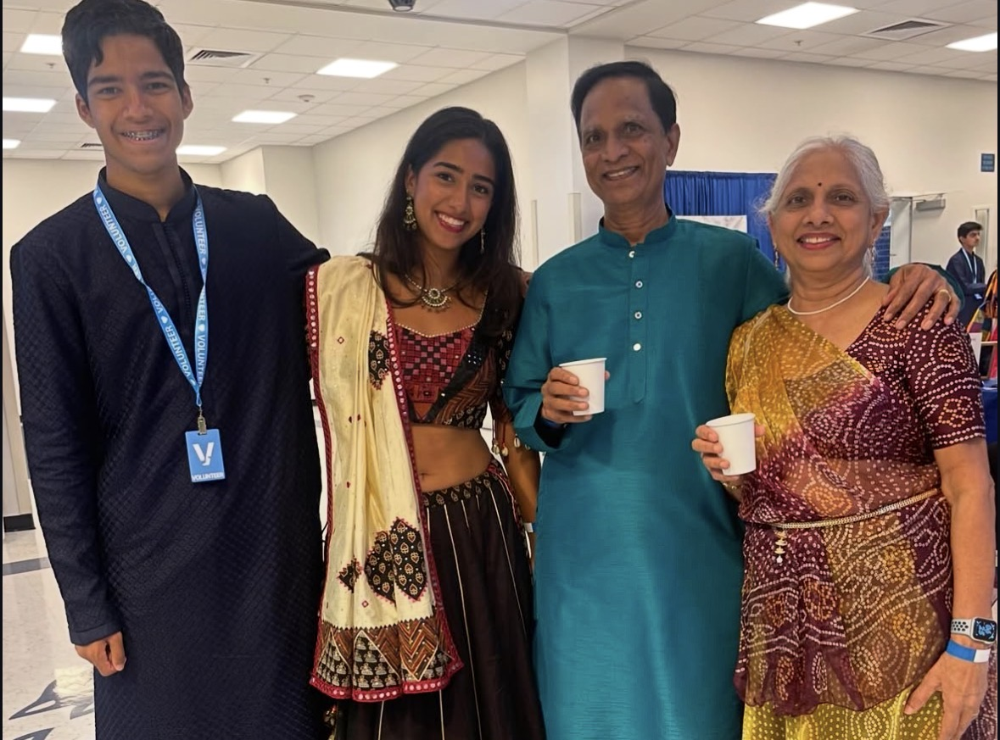
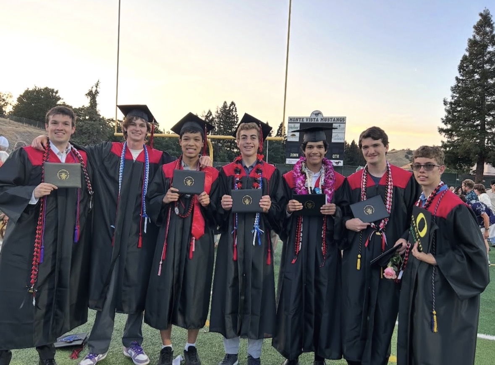
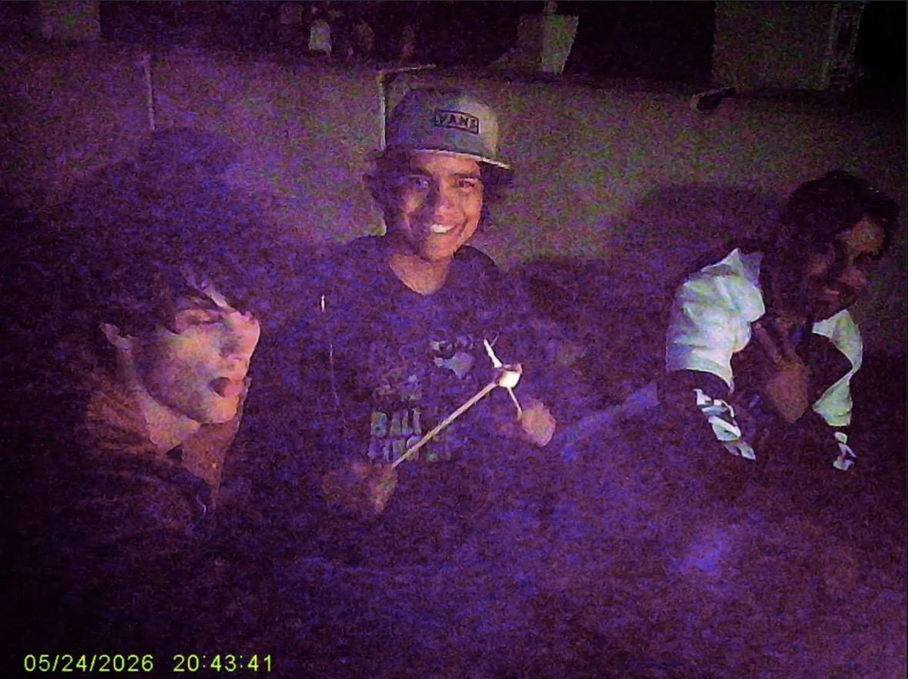
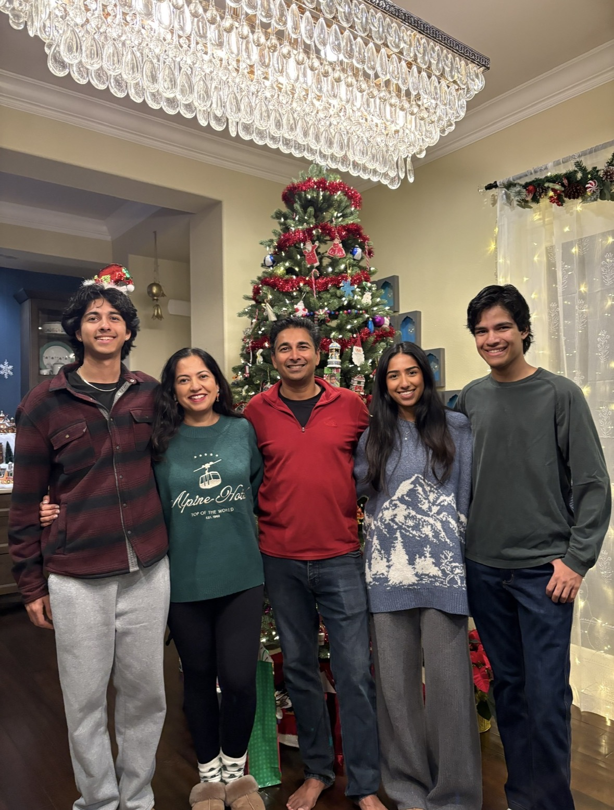

I am currently a sophomore undergraduate student at the University of California, Riverside, pursuing a degree in Psychology. My academic interests center on understanding human behavior, particularly how individuals think, interact, and develop within different social environments. Through my undergraduate education, I hope to build a strong foundation in psychological research, behavioral analysis, and the scientific methods used to investigate the complexities of human cognition and social interaction. My interest in psychology stems from a desire to better understand the factors that influence people's thoughts, emotions, and behaviors. I am particularly interested in social psychology, developmental psychology, and cognitive psychology, as these fields provide valuable perspectives on how individuals perceive themselves and others. Some of the topics that interest me most include group dynamics, social identity, interpersonal relationships, and the influence of social norms on individual behavior. I am especially fascinated by how group membership can shape personal beliefs and behaviors, as well as how individuals can influence the groups to which they belong. In the future, though, I would like to work in the filed of Industrial-Organizational Psychology as I would also like to travel around while I am still able.
In addition to social psychology, I have a strong interest in autism research and the study of neurodevelopmental differences. I hope to contribute to research that improves our understanding of autism, particularly in relation to social cognition, communication, and behavioral development. I believe that advancing psychological research in these areas can help improve access to appropriate resources, support systems, and individualized services for neurodivergent individuals. This interest has also motivated me to explore opportunities in behavioral therapy and applied behavior analysis. As an undergraduate student, I am actively seeking opportunities to expand my knowledge through research involvement, academic coursework, and practical experience. I am particularly interested in working alongside faculty members and graduate researchers to develop skills in experimental design, data collection, statistical analysis, and the interpretation of psychological findings. Participating in research would allow me to apply the concepts I learn in the classroom while gaining a deeper understanding of how psychological knowledge is developed and evaluated.
Looking toward the future, I intend to pursue graduate education in psychology, with the goal of earning a Ph.D. I am especially interested in exploring the intersection of social psychology and industrial-organizational psychology, particularly how research on human behavior can be applied to organizations, communities, and broader social systems. I am also interested in professional opportunities involving research consultation, organizational behavior, and the practical application of psychological findings to real-world challenges. Ultimately, my goal is to develop a career that combines scientific research with meaningful applications of psychological knowledge. Whether through conducting research, providing consultation, or contributing to improved psychological services, I hope to use my education to better understand human behavior and support positive outcomes for individuals and communities. As I continue my undergraduate journey, I look forward to expanding my academic interests, developing new research skills, and discovering opportunities that will help shape my future contributions to the field of psychology.
• Supervised and led activities where children could socialize and stay active throughout their summers
• Facilitated an environment where students could flourish academically through collaboration and strong mentorship.
• Assisted in various roles to help with a fundraising events.



